This is a somewhat comprehensive guide of the basics of FTC as of 2025. All of the information found on this page is not necessarily the best or only way to do something, it is simply an approach and one that is recommended by myself (Harrison C of 24089). If an error is found, or you have any suggestions or issues, feel free to either create a github issue, or if you do not know how to do that, email hchap1@hotmail.com.
OVERVIEW
All information covered on this page relates to the programming and software aspects of a robot. I will cover some hardware and design related issues, such as torque, stall power, servo ranges, ect.PROGRAMMING SYSTEMS
Android studio is an IDE (integrated development environment). This just means it is a code editor with built in tools - and as per the name these tools are used for writing code for android devices. You probably know android from mobile phones, and it is an operating system for devices, similar to windows or macOS. The control hub is an android device, as is the driver hub.The actual programming language that you use to program the robot can be one of the four following.
- OnBot block code, a scratch-like drag-n-drop system that is interpreted as OnBot java. This can be easy at first but becomes extremely limiting.
- OnBot java. This is the text form of the block code, both of which can be written in your browser via the robots network interface, see below.
- Java. This is the option I recommend. You are limited only by your programming skills, and can do anything you want. Java is a tedious language with fairly verbose syntax and inconsistencies, but nowhere near as bad as the aforementioned options. You can do anything with Java, you just need to know how. The limitations I have just mentioned will likely never come up for a new developer, and only appear as you push the limits of the SDK.
- Kotlin. Similar to Java, Kotlin is written within Android Studio. I'd like to make it clear that Java is NOT android studio, and android studio is not Java. Android studio is an editor, similar to word but for code. Kotlin is a modernised interpretation of what Java is, which gives some better syntax in some areas. It has support, but it is limited. You will never use this option, I only mentioned it so if you come across some Kotlin you know what it is.
Forget everything you think you know about websites and WiFi, because it is probably wrong.
WiFi is not internet. Internet is not WiFi. WiFi is the wireless communications protocol and systems that allow for network traffic between devices, whether that be your laptop and you modem, or in this case your laptop and the control hub. Whilst on the robots WiFi, you cannot access the internet. This is one of the reasons I made this website a single page (the other is because I couldn't be bothered splitting it up). This is a great time to talk about what a website is - it's simply an ADDRESS that your computer can contact, and the SERVER at the address sends back the necessary structure required to draw the website. This website here is actually just a html file found on our github.
This is relevant to robotics because the control hub hosts a variety of different websites, which you can access via 192.168.43.1. This is the IP address of the robot, similar to how you are currently looking at ironlionsftc.github.io. Networking happens through multiple PORTS. For example, secure websites use the https protocol, which always occurs on port 8080. For this reason, if you put 192.168.43.1:8080 into your browser whilst connected to the robot, you can access the network interface page of the robot.
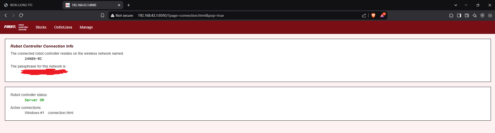
A massive part of the android studio appeal is that you can compile and push code using a tool called ADB (Android Debug Bridge). This allows you to compile the code on your laptop and rebuild the robots firmware. This does unfortunately take a minute or two, and during this time the LED on the control hub will be blue.
ADB needs to be used from within the command line (terminal). On Windows / macOS open the "terminal" application. ADB always uses port 5555, but you do not need to specify this as it will be used by default. Intuitively, the command to connect to the robot is:
adb connect 192.168.43.1
And you can disconnect with adb disconnect
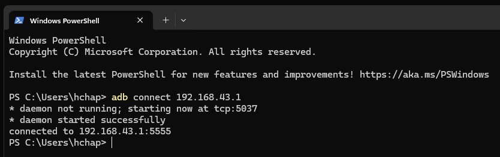
Once connected with ADB, you should see something like this at the top of android studio
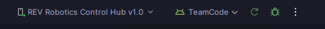
GRADLE
Gradle is the build toolchain for Java used by FTC. It can be extremely hard to work with if you don't know what you are doing. Gradle is managed across about 5 different files in different formats, with specific legacy versions required for FTC.You do not need to worry about the Gradle version. If you never touch it, you will be fine. The best rule of thumb for this is that you don't make gradle work with your project, you make your project work with gradle. Out of the box, it will not function. This is because the default java version on android studio is java 23 as of writing this. The gradle version you are forced to work with requires you to use java 17. You will need WiFi for this, and it is best to do it at home to avoid issues with school internet. Here are the steps to ensure you have the correct java version.
Go to your settings, as pictured.
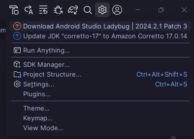
Locate gradle under Build, Execution and Development -> Build Tools -> Gradle.
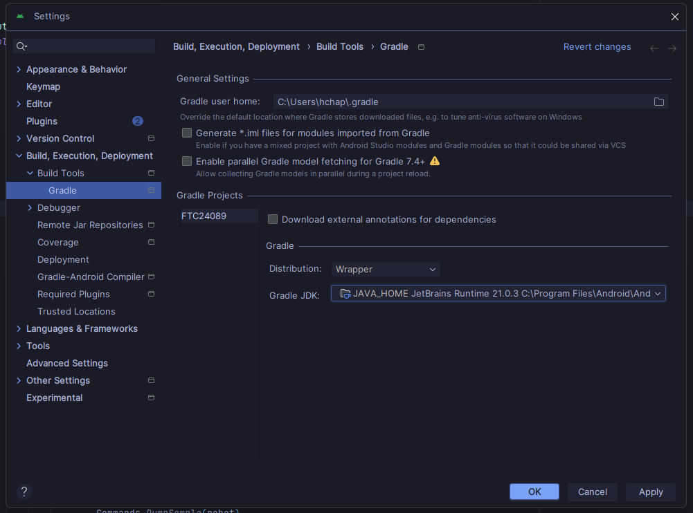
Select the dropdown for Gradle JDK (java development kit). Choose download JDK.
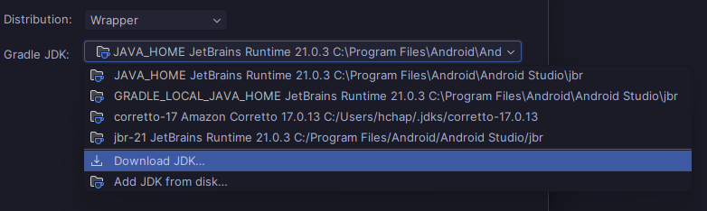
Choose version 17, select Amazon Correto, and let it cook. If the download fails at school, try at home. I am fairly sure any version 17 JDK would work, I have used Correto and it has worked, so that is my recommendation.
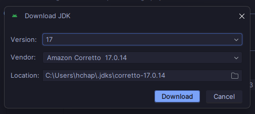
Gradle is large, and needs frequent syncing and updating. If gradle is not synced, you cannot push code to the robot. The build will fail, or any number of other things will occur. Gradle syncing also pulls down about a hundred repositories across various websites, and school internet does not like this. You may need to do this at home, whereupon if you don't have the robot you may need to create a virtual device (see below).
Creating a virual device allows you to compile the code into the format which the robot requires, which means that all of the gradle dependency versions will be final and can be pulled down exactly as they need to be for the robot, without you having the robot. The easiest way to circumvent this is to have a dual band wifi adaptor, or simply use ethernet at home and connect to the robots wifi. If this is NOT a possibility, follow these steps.
Navigate to the sidebar and click on device manager.
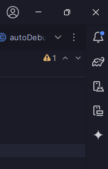
Click + for a new device, and select virtual device.
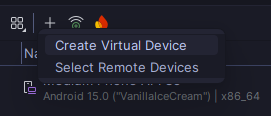
Click "New Hardware Profile" and enter the fields as follows. Double check this, as the resolution is important. Make sure you name is something sensible, like Fake Robot or Virtual Robot.
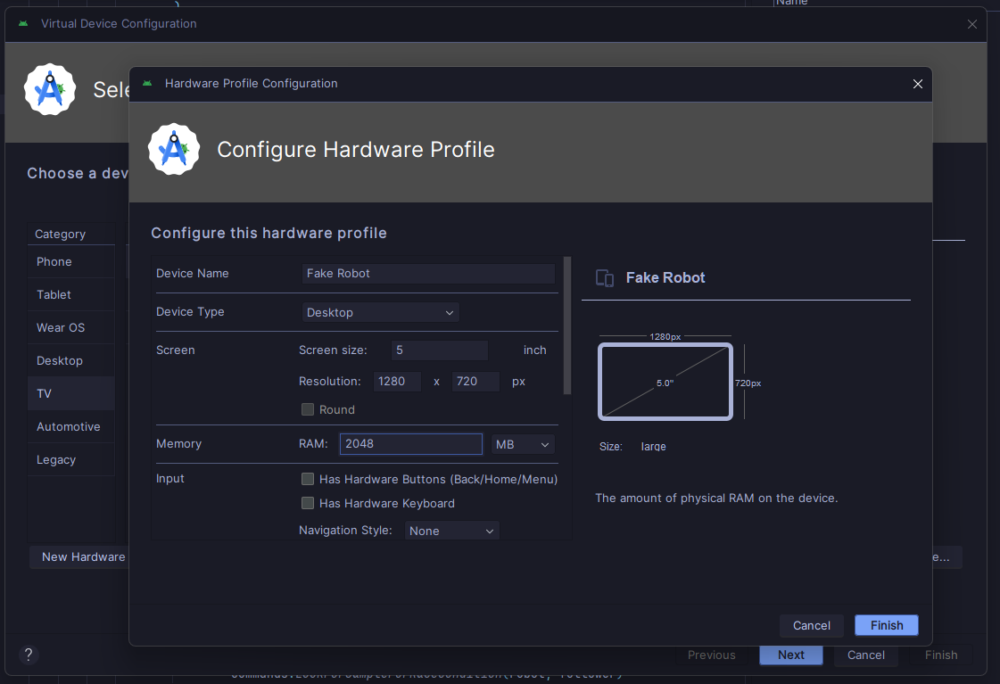
The most important step is selecting the architecture. Most windows laptops use x86, modern macOS laptops use ARM64, and phones / mobile devices use ARM64 as well. This is what gives macOS computers extended battery life. Select the latest ARM64 profile, found in the other images section.
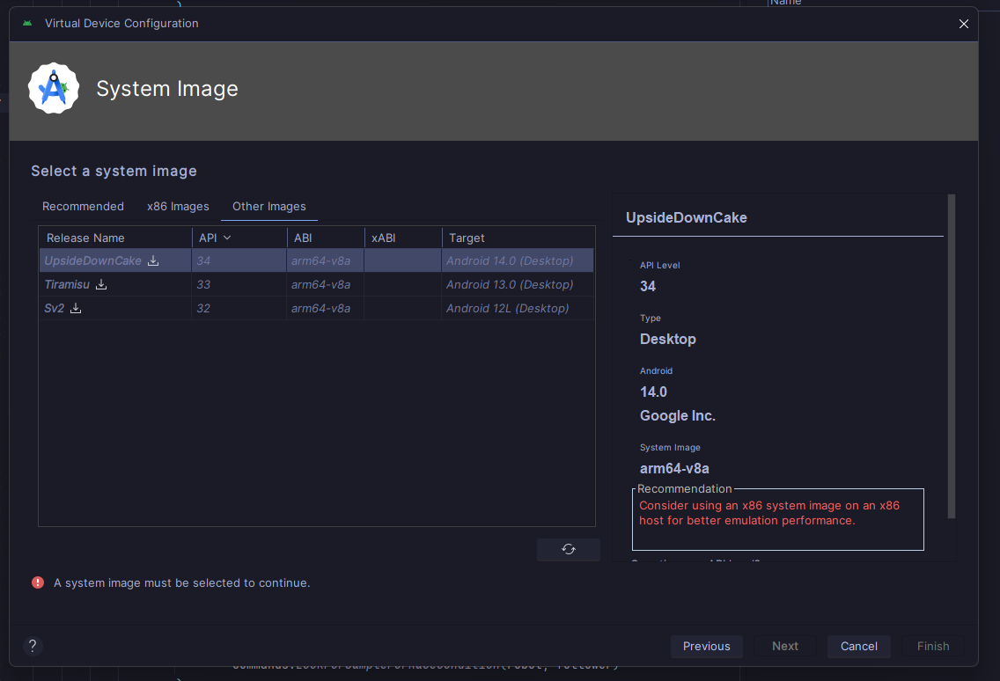
Wait until it finishes downloading the architecture profile.
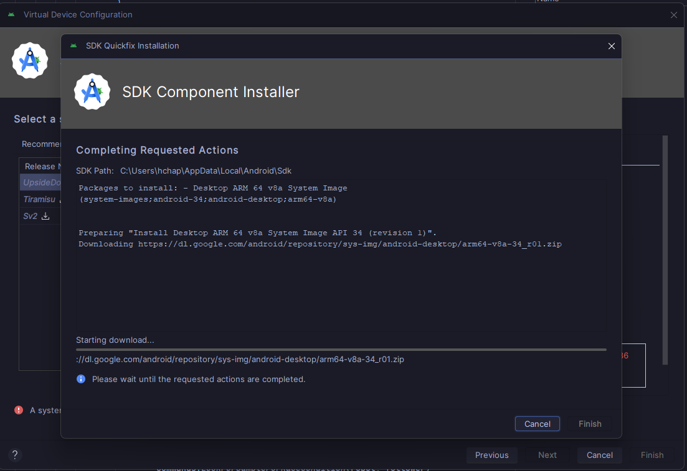
Hit next and then finish, you are done setting up the new device.
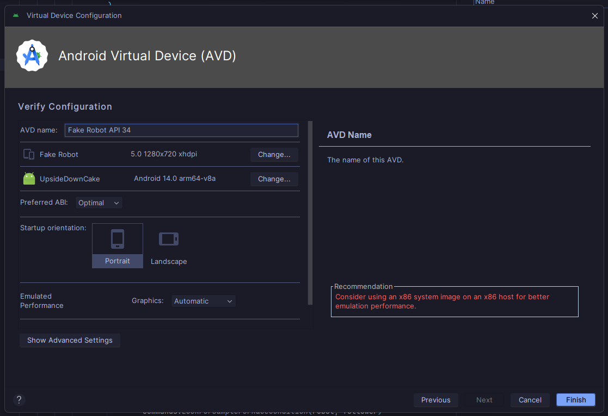
You can select the build target at the top.

Once this is done, hit the play button to build at the top. This is also how you build the code to the actual robot.